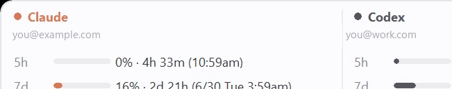
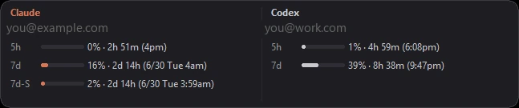
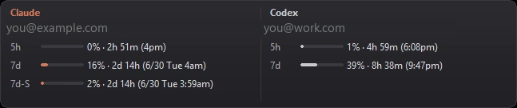
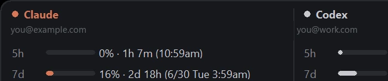
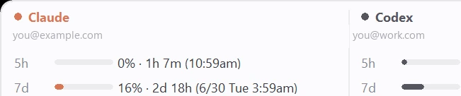

For Windows · Claude Code & Codex
Your Claude Code limits,
always in sight.
A lightweight Windows widget that shows how much of your 5-hour and 7-day usage windows you have left — without opening a terminal.

Always in sight
A small panel sits by your taskbar with a 5-hour bar and a 7-day bar, plus a live countdown to each reset. One glance tells you how close you are — no terminal, no provider dashboard.
Four themes, one glance
Match your desktop — macOS Vibrancy, Windows 11 Fluent, or a refined hybrid in dark and light.



Every account. Both providers.
Track multiple Claude accounts side by side, and add Codex in its own column. Each account shows its email and its own bars; the panel widens only for the providers you use.

Pick how it shows up
A tray badge with your current usage percentage, or a hot-corner panel that appears when your cursor hits a screen corner. Drag it where you like — it remembers.

Private by design
It reads only your local Claude Code credentials and talks only to Anthropic's usage endpoint. No accounts to create, no telemetry. It's open source — read every line.
Get Claude Code Usage Monitor
Download for Windows- Windows 10 or 11
- Claude Code (CLI or App) installed and signed in
- Optional: Codex CLI for Codex usage
First launch: this build is unsigned, so Windows SmartScreen shows "Windows protected your PC." Click More info → Run anyway. (A few Windows 11 PCs with Smart App Control on may block it more firmly.)